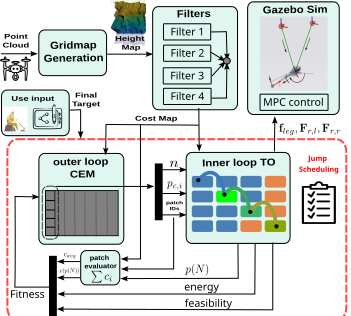

bi-level motion planner overview
Ruben Malacarne, Ioannis Tsikelis, Enrico Mingo Hoffman and Michele Focchi
Similar idea, extended to a climbing legged robot.
*Submitted to IEEE IROS 2026, Pittsburgh, US